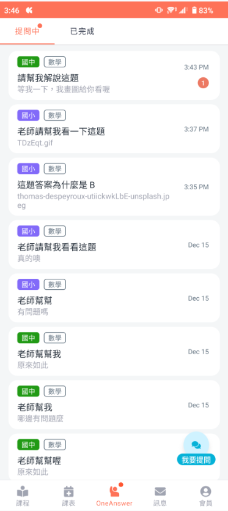
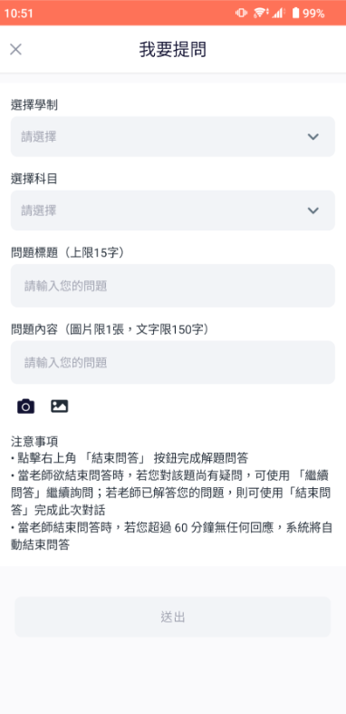
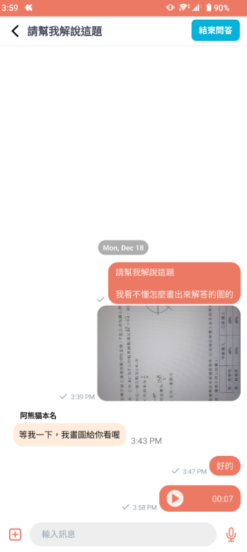
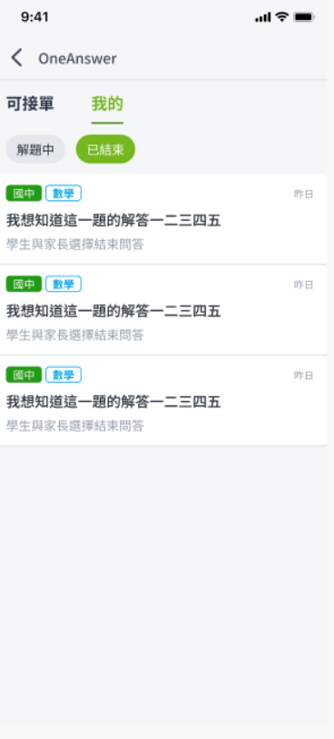
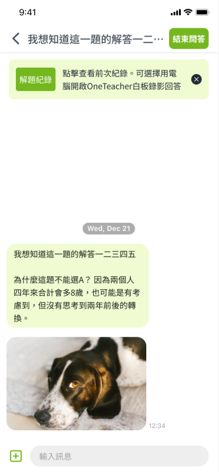
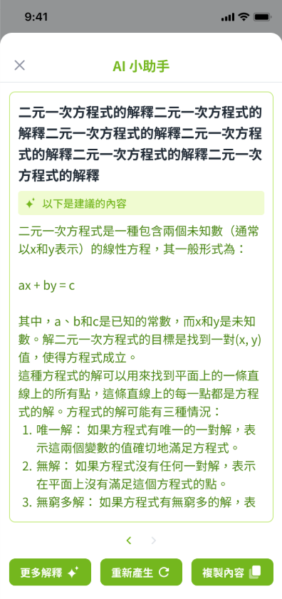
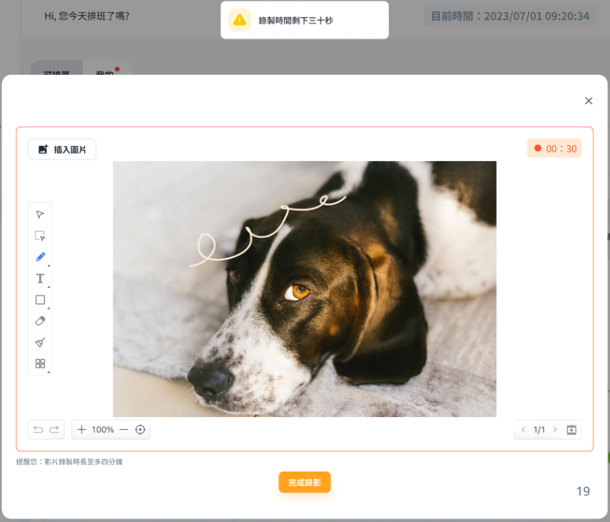

6 週把解題 APP 從 想法 變成 營收線
From idea to revenue line in 6 weeks
主導 OneAnswer 線上一對一解題 APP 從概念到上線的 0→1 歷程， 在 6 週內完成產品開發，並獲得大型連鎖補習班合約，後續獨立為集團全新營收來源。
Led the 0 → 1 delivery of OneAnswer — a 1-on-1 online tutoring app — from concept to launch in 6 weeks, securing a contract with a major tutoring chain that later spun out into a brand-new revenue line for the group.
背景與挑戰
線上教育市場高度競爭，學生在「當下不會」的瞬間，常常轉向免費工具而非付費平台。 集團希望切入「即問即答」的瞬時需求，同時透過 B2B2C 管道， 以最小成本驗證一個全新的營收線。挑戰是：如何在 6 週內同時完成產品、導師系統與學生端的對接。
Online learning is fiercely competitive, and in the "I'm stuck right now" moment, students often flip to free tools rather than paid platforms. The group wanted to tap that moment through a B2B2C channel — validating a brand-new revenue line with minimum cost. The constraint: ship a product, a tutor system and the student-facing experience, all in 6 weeks.
我的角色
- 產品整體規劃：PRD、User Flow、媒合邏輯、結算流程。
- 跨團隊對齊：與工程、設計、運營等多方利害關係人溝通對齊。
- 導入 AI 工具：協助教師解題，提升處理量能，並驗證 AI 效益。
- Owned product definition — PRD, user flows, matching logic, settlement rules.
- Aligned multiple stakeholders across engineering, design and operations.
- Introduced AI tooling to assist tutors — boosting throughput while validating AI's business value.
一個產品，兩端用戶
B2B2C 產品的核心是同時服務兩端用戶。OneAnswer 透過雙端介面設計， 讓學生的「隨時發問」與教師的「高效接單」以最低摩擦互相配對， 完成「下單 → 媒合 → 問答 → 結單」的完整流程。
The core of a B2B2C product is serving two sides at once. OneAnswer's dual-side interfaces pair the student's "ask anytime" need with the tutor's "claim & solve" workflow at minimum friction, completing the full ask → match → answer → settle flow.






桌機白板錄影 · AI × 白板 × 即時聊天
Desktop Whiteboard Recording · AI × Canvas × Chat
免費解題工具難以複製的專業協作場景：教師可於題目圖上直接標註、錄製解題步驟語音影片， 讓複雜題目的說明效率大幅提升。
A professional collaboration surface free tools can't match — tutors annotate on the question image and record step-by-step voice-over, dramatically accelerating explanation for complex problems.

流程與決策
- Week 1：定義 MVP Scope — 只留下「發問 → 媒合 → 解題 → 結算」四個核心動作。
- Week 2–4：與工程、設計團隊同步協做，縮減時間成本；同步與營運端確認結算流程確保產品符合營運流程。
- Week 5：封測，蒐集教師 + 學生雙端痛點。
- Week 6：正式上線，觀測使用數據與使用者回饋。
- 上線後：引入 AI 解題輔助，提升教師單位時間可處理量；新增轉單機制，學生體驗不受影響下確保每張單皆可處理完成。
- Week 1: locked MVP to four verbs — ask → match → answer → settle.
- Week 2–4: paired with eng & design to compress delivery time; aligned with ops on settlement so the product stayed on-rails.
- Week 5: closed beta, harvested pain points on both tutor & student sides.
- Week 6: public launch; observed usage data and user feedback.
- Post-launch: layered AI assistance into the tutor flow to boost throughput; added a fallback reassignment so every ticket closes without hurting the student experience.
關鍵成果
成果與影響
OneAnswer 成功與大型連鎖補習班達成長期合作，後續獨立為集團新產品線， 打開原本核心產品觸及不到的用戶市場。同步驗證「付費問答」的需求（+250% 產品使用率） 與 AI 導入教師流程的可行性（+35% 解題速度），為集團後續的 AI 教育產品策略提供了決策基礎。
OneAnswer locked in a long-term deal with a major tutoring chain and spun out as its own product line, reaching audiences the core product couldn't. The sprint also validated both the demand for paid on-demand Q&A (+250% product usage) and the feasibility of embedding AI into the tutor workflow (+35% tutoring speed) — giving the group a data-backed foundation for its next AI-powered education bets.
我學到的事
- 當時間是最大限制時，scope 必須先於功能。
- B2B2C 產品要同時照顧兩端用戶，媒合機制的設計決定了產品能否自己長大。
- AI 工具的導入不是取代人，而是讓專業者加速判斷，並達成商業目標。
- When time is the biggest constraint, scope beats features.
- B2B2C products serve two users at once; the matching layer decides whether the product can grow itself.
- AI tooling isn't about replacing people — it's about helping experts judge faster and drive business outcomes.